#Launch main StreamXpert software and select correct port for TR 101 290 analysis with optional recorder option.
#inputs: dektecPort=[] seCmd=<> seWaitTime=<>
#input: dektecPort=[] Options include the same as display from StreamXpert software
# the following are options for all Dektec cards, please report if yours is not supported:
# "DTA-160 port 1"
# "DTA-160 port 4"
# "DTA-2160 port 1"
# "DTA-2160 port 4"
#input: seCmd=[default=C:\Program Files (x86)\DekTec\StreamXpert\streamXpert.exe]
#input: seWaitTime=[default=120]
#Input: seMode=[ATSC, DVB, DVB-RCS]
#Inputs: udpIp=[] udpPort=[]
#Inputs: captureFile=[] seDur=[in seconds. Use by both capture and analysis]
#Input: compliantCheck=[1/0. Default 1]
#Input: captureResult=0/1. Default = 0. Set to 1 to always capture screen result for compliance check
#Usage: StreamXpert.sikuli dektecPort="DTA-160 port 4" seMode=ATSC udpIp= udpPort= captureFile=test.ts compliantCheck=0 - to capture only
#Usage: StreamXpert.sikuli dektecPort="DTA-160 port 4" seMode=ATSC udpIp= udpPort= - to check for compliant only
#Usage: StreamXpert.sikuli dektecPort="DTA-160 port 4" seMode=ATSC udpIp= udpPort= captureFile=test.ts seDur=[seconds] - to capture with compliance check
#Usage: StreamXpert.sikuli dektecPort="DTA-160 port 4" seMode=ATSC/DVB/DVB-RCS compliantCheck=0 - to configure mode and select port only
###############################################################
#common code for every sikuli code. Do not remove this section
from commonlib import *
import re
###############################################################
#YOUR code start here
###############################################################
#This is your check for the inputs that you are expecting.
#Can be use to capture a file or check for TR 101 290 compliant live
def Check_args():
#checking for required arguments
if not Get_arg('seDur'):
Set_arg('seDur', '5')
Print_debug('seDur is not given. Use default value of 5 seconds.')
if Get_arg('captureFile'):
captureFile = Get_arg('captureFile')
if re.search(r'\\', captureFile):
my_outputdir = os.path.basename(captureFile)
#making sure directory is present.
if not os.path.isdir(my_outputdir):
Print_debug(my_outputdir + ' is not existed. Need to create it.')
if not os.makedirs(my_outputdir):
Exit_program('Failed to create dir: ' + my_outputdir, 2)
else:
Print_debug(my_outputdir + ' existed.')
else:
captureFile = os.getcwd() + '\\' + captureFile
Set_arg('captureFile', captureFile)
if not Get_arg('seResultFile'):
myresult = 'StreamXpert_Result_' + Get_time_string() + '.png'
Set_arg('seResultFile', myresult)
else:
myresult = Get_arg('seResultFile')
if not re.search(r'\\.png', myresult):
myresult = myresult + '.png'
if Get_arg('udpIp'):
Check_arg('udpPort')
if not Get_arg('seCmd'):
my_secmd = 'C:\\Program Files (x86)\\DekTec\\StreamXpert\\StreamXpert.exe'
Set_arg('seCmd', my_secmd)
Print_debug('StreamXpert Command is not given. Will use default: ' + my_secmd)
if not Get_arg('seWaitTime'):
Set_arg('seWaitTime', '60')
Print_debug('StreamXpert software wait time is not given. Will use default 60.')
if not Get_arg('compliantCheck'):
Set_arg('compliantCheck', '1')
Print_debug('Compliant check will be on by default.')
if not Get_arg('captureResult'):
Set_arg('captureResult', '0')
Print_debug('Screen result capture is only enabled for failed compliant check.')
Check_args()
############################################################
#Main program definitions code start from this point
#Any global variables here
StreamXpertTitle = 'StreamXpert'
my_waittime = Get_arg('seWaitTime')
#Any definitions are here
#launch the main Miranda Isolo Control software
#Select Mirando Slot Number
def Select_Port():
if Get_arg('dektecPort'):
my_port = Get_arg('dektecPort')
find(); click(Pattern().targetOffset(-16,1))
if my_port == 'DTA-160 port 4':
find(Pattern(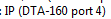).similar(0.90)); click(Pattern().similar(0.90))
elif my_port == 'DTA-160 port 1':
find(Pattern(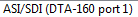).similar(0.90)); click(Pattern().similar(0.90))
elif my_port == 'DTA-2160 port 1' :
find(Pattern(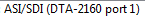).similar(0.90)); click(Pattern().similar(0.90))
elif my_port == "DTA-2160 port 4":
find(Pattern(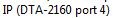).similar(0.90)); click(Pattern().similar(0.90))
else:
Exit_program('Invalid Dektec port name: ' + my_port, 2)
def Launch_StreamXpert():
#First check if the correct slot is already running
mycmd = 'auto_windows_manager.exe windows_title=\"' + StreamXpertTitle + '\" windows_action=2'
my_status = Run_cmd(mycmd)
Print_debug(my_status)
if int(my_status) == 0:
find()
Print_debug(StreamXpertTitle + ' is already running. Use current session.')
else:
#Launch StreamXpert
my_secmd = Get_arg('seCmd')
my_app = openApp(my_secmd)
Print_debug('Waiting for StreamXpert software to come up... ' + my_waittime)
wait(, int(my_waittime))
mycmd = 'auto_windows_manager.exe windows_title=\"' + StreamXpertTitle + '\" windows_action=2'
my_status = Run_cmd(mycmd)
if int(my_status) == 0:
Print_debug(StreamXpertTitle + ' launched successfully.')
else:
Exit_program(StreamXpertTitle + ' failed to launch correctly', 2)
if not exists(Pattern(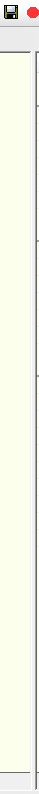).exact()):
find(); dragDrop(Pattern().targetOffset(-17,-4), Pattern( ).targetOffset(-1,600))
#select TR101290 tab
find(); click(Pattern().targetOffset(242,0))
def Set_Mode():
'''There are 3 modes: ATSC Mode, DVB Mode, DVB-RCS Mode
'''
if Get_arg('seMode'):
my_mode = Get_arg('seMode')
find(); click(Pattern().targetOffset(52,23)); sleep(1)
if my_mode == 'ATSC':
click(Pattern().targetOffset(5,75))
elif my_mode == 'DVB':
click(Pattern().targetOffset(2,43))
elif my_mode == 'DVB-RCS':
click(Pattern().targetOffset(1,63))
else:
Exit_program('Invalid StreamXpert mode not in range (DVB, DVB-RCS, ATSC): ' + my_port, 2)
def Set_Address():
'''Set the udpIp and udpPort of the multicast address
'''
if Get_arg('udpIp'):
my_ip = Get_arg('udpIp')
my_port = Get_arg('udpPort')
find(); doubleClick(Pattern().targetOffset(175,0))
type('udp://' + my_ip + ':' + my_port); type(Key.ENTER)
def Run_Capture():
'''Setup capture file
'''
my_waittime = int(Get_arg('seDur'))
if Get_arg('captureFile'):
myfile = Get_arg('captureFile')
find(); click(Pattern().targetOffset(-12,0))
wait(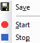); click(Pattern().targetOffset(2,-23))
wait(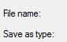); click(); type("a", KEY_CTRL); type(myfile); type(Key.ENTER)
#capture
find(); click(Pattern().targetOffset(-2,0)); sleep(my_waittime); click(Pattern().targetOffset(20,0))
if os.path.exists(myfile):
Print_debug(myfile + ' captured successfully.')
else:
Exit_program(myfile + ' failed to capture.', 1)
else:
if Get_arg('compliantCheck'):
if Get_arg('compliantCheck') == '1':
sleep(my_waittime)
def Run_StreamXpert():
'''Report on TR-101-290 summary
'''
if Get_arg('compliantCheck'):
my_seCompliant = Get_arg('compliantCheck')
if my_seCompliant == '1':
#clear the current status
rightClick(Pattern().targetOffset(45,0)); wait(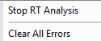); click(Pattern().targetOffset(-11,15))
Run_Capture()
#capture the screen
my_capfile = Get_arg('seResultFile')
if exists(Pattern().exact()):
if Get_arg('captureResult') == '1':
Capture_screen(0,0,1920,1040, my_capfile)
Print_debug('Output is TR 101 290 compliant.')
else:
Capture_screen(0,0,1920,1040, my_capfile)
if exists(Pattern().exact()):
if Get_arg('ignore_pcr_accuracy_error') == '1':
Print_text('PCR Accurarcy errors found, but was ignored by the user.')
Print_debug('Output is TR 101 290 compliant.')
else:
Exit_program('Output is not TR 101 290 compliant.')
else:
Exit_program('Output is not TR 101 290 compliant.')
elif my_seCompliant == '0':
Print_debug('Skipping TR 101 290 compliant check.')
Run_Capture()
else:
Exit_program('Invalid compliantCheck option (0 or 1): ' + my_seCompliant, 2)
#######################################################
#Main program flow
Launch_StreamXpert()
Select_Port()
Set_Mode()
Set_Address()
Run_StreamXpert()
).targetOffset(-1,600))
#select TR101290 tab
find(); click(Pattern().targetOffset(242,0))
def Set_Mode():
'''There are 3 modes: ATSC Mode, DVB Mode, DVB-RCS Mode
'''
if Get_arg('seMode'):
my_mode = Get_arg('seMode')
find(); click(Pattern().targetOffset(52,23)); sleep(1)
if my_mode == 'ATSC':
click(Pattern().targetOffset(5,75))
elif my_mode == 'DVB':
click(Pattern().targetOffset(2,43))
elif my_mode == 'DVB-RCS':
click(Pattern().targetOffset(1,63))
else:
Exit_program('Invalid StreamXpert mode not in range (DVB, DVB-RCS, ATSC): ' + my_port, 2)
def Set_Address():
'''Set the udpIp and udpPort of the multicast address
'''
if Get_arg('udpIp'):
my_ip = Get_arg('udpIp')
my_port = Get_arg('udpPort')
find(); doubleClick(Pattern().targetOffset(175,0))
type('udp://' + my_ip + ':' + my_port); type(Key.ENTER)
def Run_Capture():
'''Setup capture file
'''
my_waittime = int(Get_arg('seDur'))
if Get_arg('captureFile'):
myfile = Get_arg('captureFile')
find(); click(Pattern().targetOffset(-12,0))
wait(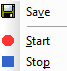); click(Pattern().targetOffset(2,-23))
wait(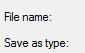); click(); type("a", KEY_CTRL); type(myfile); type(Key.ENTER)
#capture
find(); click(Pattern().targetOffset(-2,0)); sleep(my_waittime); click(Pattern().targetOffset(20,0))
if os.path.exists(myfile):
Print_debug(myfile + ' captured successfully.')
else:
Exit_program(myfile + ' failed to capture.', 1)
else:
if Get_arg('compliantCheck'):
if Get_arg('compliantCheck') == '1':
sleep(my_waittime)
def Run_StreamXpert():
'''Report on TR-101-290 summary
'''
if Get_arg('compliantCheck'):
my_seCompliant = Get_arg('compliantCheck')
if my_seCompliant == '1':
#clear the current status
rightClick(Pattern().targetOffset(45,0)); wait(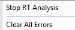); click(Pattern().targetOffset(-11,15))
Run_Capture()
#capture the screen
my_capfile = Get_arg('seResultFile')
if exists(Pattern().exact()):
if Get_arg('captureResult') == '1':
Capture_screen(0,0,1920,1040, my_capfile)
Print_debug('Output is TR 101 290 compliant.')
else:
Capture_screen(0,0,1920,1040, my_capfile)
if exists(Pattern().exact()):
if Get_arg('ignore_pcr_accuracy_error') == '1':
Print_text('PCR Accurarcy errors found, but was ignored by the user.')
Print_debug('Output is TR 101 290 compliant.')
else:
Exit_program('Output is not TR 101 290 compliant.')
else:
Exit_program('Output is not TR 101 290 compliant.')
elif my_seCompliant == '0':
Print_debug('Skipping TR 101 290 compliant check.')
Run_Capture()
else:
Exit_program('Invalid compliantCheck option (0 or 1): ' + my_seCompliant, 2)
#######################################################
#Main program flow
Launch_StreamXpert()
Select_Port()
Set_Mode()
Set_Address()
Run_StreamXpert()